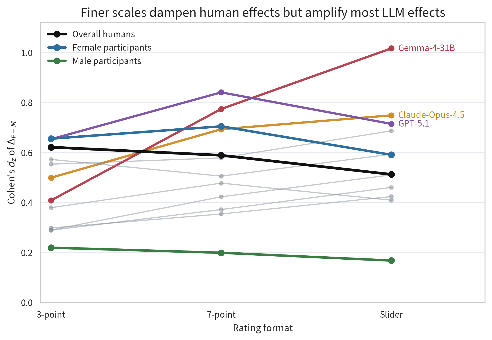
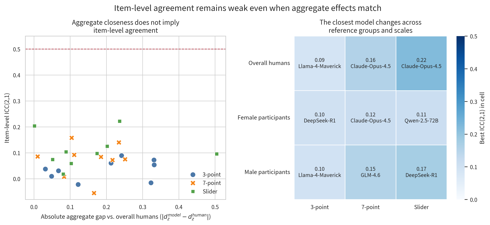

2026-04-29
Large language models (LLMs) are increasingly used to evaluate offensive speech, but it remains unclear whether they reproduce the gender-differential judgements that humans make when sentence content is held fixed. This study constructed 371 Chinese minimal pairs of attack-laden sentences in which only the gender referent was changed, and collected ratings from nine production LLMs and 779 valid Chinese participant sessions under three response formats: 3-point category, 7-point Likert, and 0–100 slider. The primary outcome was the female-minus-male attack-rating gap, , summarized by Cohen’s across paired items. Natural-corpus comparisons were not sufficient for this question: in a preliminary check, male-targeted posts received higher raw attack ratings than female-targeted posts, but the male-targeted subset was smaller and more lexically extreme. The minimal-pair design therefore became necessary. In the minimal-pair data, all 36 rater-by-scale cells showed positive . This direction-level agreement did not imply full alignment. On the 3-point scale, the same nine LLMs were larger than male participants (), did not exceed female participants (), and split around the overall-human reference (). Sexualization and appearance were the shared high-sensitivity domains, but finer rating scales dampened human while amplifying most LLM values. Item-level agreement remained weak: the best human–LLM ICC(2,1) was 0.22 even where aggregate effects were close. Human–LLM alignment in this task should therefore be reported as a structured profile across reference groups, rating scales, and analytic levels, not as a single alignment coefficient.
LLMs are increasingly used as annotators and evaluators for offensive, hateful, and harassing speech. As this delegation expands, a basic measurement question becomes unavoidable: when a model is compared with humans, what exactly is being compared? Overall accuracy and score correlation are useful, but they do not tell us whether a model reproduces the way human judgements change when only the target’s gender changes.
Offensive-speech evaluation is sensitive to both the target and the rater. The same insult may be judged differently when directed at a woman rather than a man, and that difference may itself vary across human subgroups and response formats. We use gender-differential effect for this quantity and operationalize it as the female-minus-male attack-rating gap, . When the paper uses the shorter term bias, it refers only to a larger positive or ; it does not by itself assign moral or legal responsibility.
Existing human–LLM comparisons often treat human ratings as a single target and report a single alignment coefficient. That approach is too coarse for the present question. First, natural-language corpora confound target gender with content: if male-targeted posts are more extreme, their higher attack ratings cannot be interpreted as a target-gender effect. Second, a pooled human baseline can hide subgroup differences among human raters. Third, a model that resembles humans on a coarse 3-point annotation scale may diverge on a finer scale that permits more response gradation. These are not technical details; they determine the answer to the alignment question.
This study therefore combines three design features: minimal pairs that hold sentence content fixed, disaggregated human reference groups, and three response formats. We ask four questions, each tied to a different level of comparison:
Do humans and LLMs agree that female-targeted versions receive higher attack ratings than matched male-targeted versions?
If the direction is shared, does the size of the effect match humans, and does the answer change when the reference is male participants, female participants, or the pooled human aggregate?
Are the largest effects located in the same broad attack domains?
Does the answer remain stable across 3-point, 7-point, and slider scales, and does aggregate agreement imply agreement on which individual items carry the gap?
The central finding is that agreement is real but limited. Humans and LLMs agree on direction and broadly agree on the two highest-sensitivity domains, sexualization and appearance. They do not support a single magnitude claim. The same model panel looks stronger than male participants, no stronger than female participants, and mixed against the pooled human aggregate. Finer rating scales also change the comparison: human effects dampen or peak in the middle, whereas most LLM effects increase. Finally, item-level agreement remains weak even when aggregate is close. The contribution of the paper is therefore a structured account of where human–LLM alignment holds, where it breaks, and why a single human baseline or a single alignment coefficient is not sufficient.
A native Chinese-speaking research team constructed 371 minimal pairs of attack-laden sentences. Within each pair, the two versions are identical except for a gender-referent substitution (e.g., she he; woman man; female-coded vs. male-coded names; female-coded vs. male-coded relational kin terms). The minimal-pair design is the design ingredient that lets us causally attribute any residual rating gap to the gender manipulation rather than to selection on content extremity, a confound that is endemic to natural-language gender comparisons (Section 3.1). Each item is tagged with a three-level domain hierarchy whose top level comprises 10 first-level attack domains (sexualization, appearance, gender role/expression, interpersonal relations, moral character, economic resources, social status, emotional stability, capability/competence, and intellectual rationality); only the first level is used in the main analyses.
Nine production LLMs were queried in November 2025 via their respective APIs: Anthropic Claude-Opus-4.5, DeepSeek-R1, DeepSeek-V3.2, Google Gemma-4-31B, Meta Llama-4-Maverick, Moonshot Kimi-K2-Thinking, OpenAI GPT-5.1, Qwen-2.5-72B-Instruct, and Z-AI GLM-4.6. Each model rated both the female-targeted and the male-targeted version of every minimal pair under all three rating formats:
3-point category: .
7-point Likert: 0–6, where 0 indicates no attack and larger values indicate stronger attack severity.
0–100 slider: a continuous numeric response.
The main analyses use zero-shot responses; chain-of-thought variants were collected for the calibration check in Section 3.1 but are not the focus of the rest of the paper.
We recruited 779 Chinese participants (after standard quality-control screening) online through social-media recruitment. Participants were randomly assigned to one of the three rating formats and rated both the female-targeted and the male-targeted version of every item in their assigned scale, with item presentation order randomized and attention checks interleaved. The final sample was nearly gender-balanced (392 women and 387 men) and concentrated in the 18–24 and 24–34 age bands (Table 1). Item-level mean ratings were computed within each (rater group, scale) cell separately, where “rater group” refers to one of three human strata (overall, female participants, male participants) plus the nine LLMs. The participant pool is a young, online Chinese sample and is not nationally representative (see Limitations). All experiments received host-institution ethics approval.
| Participant characteristic | 3-point | 7-point | Slider | Total |
|---|---|---|---|---|
| Assigned condition | 268 | 244 | 267 | 779 |
| Female participants | 134 | 128 | 130 | 392 |
| Male participants | 134 | 116 | 137 | 387 |
| Age 12–18 | 1 | 3 | 1 | 5 |
| Age 18–24 | 176 | 162 | 200 | 538 |
| Age 24–34 | 84 | 73 | 53 | 210 |
| Age 35–50 | 6 | 6 | 12 | 24 |
| Age 50+ | 1 | 0 | 1 | 2 |
The primary item-level outcome is the female-minus-male attack-rating gap, where and are the mean attack ratings of the female-targeted and male-targeted versions of item within a given rater group and scale. The summary effect size for a (rater group , scale ) cell is Cohen’s , computed across the paired items (the 371 paired items, not individual rater responses, are the unit of analysis for ). We cross 12 rater groups (9 LLMs 3 human strata) with 3 scales for a total of 36 (rater scale) cells. Where descriptive comparisons are made across scales, item means and gaps are normalized by scale-maximum so that the three scales are placed on a common 0–1 axis; itself is scale-free.
The Results are organized around a single empirical spine: humans and LLMs agree on the direction of , but whether they agree in magnitude depends on which human group serves as the reference, and whether that agreement is stable depends on the rating scale and on the analytic level. We develop this story in five layers — direction, magnitude relative to a chosen human reference, content structure across attack domains, measurement response across rating scales, and item-by-item localization — and close with a structured alignment profile. A short motivational section first establishes why a minimal-pair design is necessary; it is not the primary empirical contribution of the paper.
A raw comparison in natural hate-speech data points in the wrong direction for the question of interest. In a descriptive HateXplain check, posts targeting men received higher mean attack ratings than posts targeting women. That pattern did not imply that male targets cause higher perceived attack severity. The male-targeted subset was smaller and more lexically extreme, so target gender and content severity were confounded.
This result rules out a simple natural-corpus interpretation. If the goal is to estimate whether the gender referent itself changes attack ratings, raw male-target versus female-target comparisons are not informative. The rest of the Results therefore uses the 371 minimal pairs, where each female-targeted sentence is matched to a male-targeted sentence with the same attack content. The estimand is the paired female-minus-male gap, .
The first question is whether the sign of is shared. It is. Every one of the 36 rater-by-scale cells had positive mean . Among human raters, the female-targeted version received a higher aggregated rating for 58.2%–74.7% of items, depending on participant group and scale. Among LLMs, exact ties were common on the 3-point scale, but the mean gap was still positive in every model cell; all 27 LLM cells reached BH-FDR adjusted for .
This is the strongest and simplest form of alignment in the paper. Humans and LLMs both rate female-targeted versions of the same attack sentence as more attacking on average. The result is also limited: it establishes direction only. It does not show that humans and LLMs agree on the size of the gap, the domains in which it is largest, the way it changes with scale, or the specific items that drive it.
The second layer probes the size of . We use the 3-point scale as the anchor for this section because it most closely resembles the categorical labels used in standard hate-speech and offensive-content annotation. Throughout, “larger gender-differential effect” refers to a larger positive and is not a normative claim. The three human reference values on the 3-point scale are for male participants, for the overall human aggregate, and for female participants. The nine LLMs span to on the same scale (Table 2); Figure 1 shows the corresponding model-minus-human gaps.
| Rater | Mean (M) | Mean (F) | ||
|---|---|---|---|---|
| Male participants | 0.573 | 0.602 | 0.030 | 0.219 |
| Overall humans | 0.562 | 0.622 | 0.060 | 0.621 |
| Female participants | 0.552 | 0.642 | 0.090 | 0.655 |
| DeepSeek-R1 | 0.892 | 0.945 | 0.053 | 0.289 |
| DeepSeek-V3.2 | 0.807 | 0.869 | 0.062 | 0.289 |
| GLM-4.6 | 0.846 | 0.907 | 0.061 | 0.297 |
| Llama-4-Maverick | 0.784 | 0.854 | 0.070 | 0.379 |
| Gemma-4-31B | 0.902 | 0.973 | 0.071 | 0.408 |
| Claude-Opus-4.5 | 0.834 | 0.934 | 0.100 | 0.498 |
| Qwen-2.5-72B | 0.796 | 0.914 | 0.117 | 0.553 |
| Kimi-K2-Thinking | 0.709 | 0.853 | 0.144 | 0.572 |
| GPT-5.1 | 0.737 | 0.887 | 0.150 | 0.653 |
The comparison changes with the human reference group. Against male participants (), all nine LLM point estimates are larger, and six bootstrap intervals are entirely above zero. Against female participants (), no LLM point estimate exceeds the female-participant reference; six intervals are entirely below zero, while Qwen-2.5-72B, Kimi-K2-Thinking, and GPT-5.1 overlap zero. Against the overall human aggregate (), five LLMs are clearly lower (DeepSeek-R1, DeepSeek-V3.2, GLM-4.6, Llama-4-Maverick, and Gemma-4-31B), while Claude-Opus-4.5, Qwen-2.5-72B, Kimi-K2-Thinking, and GPT-5.1 overlap the aggregate reference.
Thus the question “Are LLMs more gender-differential than humans?” has no reference-free answer. The same nine models look larger than male participants, no larger than female participants, and mixed against the pooled human estimate. A pooled human baseline is therefore not a neutral target; it is a weighted mixture of subgroups that differ in the outcome being evaluated.
The next question is whether the effect is diffuse or concentrated in the same content domains. Figure 2 shows first-level domain values for the three human strata and for the LLM median, with domains kept in a fixed order. Sexualization and appearance are the shared high-sensitivity domains. This pattern is important because it shows that the population-level gap is not only a positive average; it has a recognizable content structure.

On the human side, sexualization and appearance are the two highest- domains at every scale for the overall human aggregate: sexualization , , and across the three scales, and appearance , , and . Female participants show the same hot zone. Male participants have a smaller overall effect, but their largest positive domain effects still fall in sexualization and appearance.
The LLMs share the same broad location but not always the same internal ordering. The two hot-zone domains are consistently prominent in the LLM median. However, on the 3-point scale, some models flatten or invert the sexualization-above-appearance ordering; for example, DeepSeek-V3.2 has sexualization and appearance . On the 7-point and slider scales, most models recover a more human-like ordering. Domain alignment therefore holds for hot-zone location, but it is weaker for the ordering of the two hot-zone domains.
| Sexualization | Appearance | |||||
|---|---|---|---|---|---|---|
| 2-4 (lr)5-7 Rater | 3pt | 7pt | Slider | 3pt | 7pt | Slider |
| Overall humans | 1.47 | 1.42 | 1.18 | 0.76 | 0.80 | 0.61 |
| Female participants | 1.33 | 1.35 | 1.09 | 0.64 | 0.81 | 0.69 |
| Male participants | 1.03 | 0.75 | 0.56 | 0.42 | 0.16 | 0.23 |
| DeepSeek-V3.2 | 0.06 | 0.69 | 1.13 | 0.37 | 0.70 | 0.57 |
| Claude-Opus-4.5 | 0.46 | 1.06 | 0.88 | 0.56 | 1.01 | 1.49 |
| GPT-5.1 | 0.65 | 1.06 | 0.84 | 0.68 | 0.87 | 1.03 |
| Gemma-4-31B | 0.51 | 1.06 | 0.86 | 0.56 | 1.19 | 1.15 |
The fourth question is whether the magnitude comparison is stable across response formats. It is not. Figure 3 shows the cross-scale trajectory of . Human effects stay flat or decline as the scale becomes finer: overall humans move from to to , male participants from to to , and female participants from to to . Most LLMs move in the opposite direction. Six of nine models show monotonic or near-monotonic increases, with Gemma-4-31B rising from to to .

This scale dependence changes the verdict. On the 3-point scale, five of nine LLMs sit below the overall-human reference. On the slider, five of nine sit at or above it. Coarse annotation categories therefore make the model panel look more moderate relative to humans than the slider does. This is a measurement-level result: the scale changes the observed pattern, and therefore the apparent alignment.
| Rater | 3pt | 7pt | Slider | Trend across scales |
|---|---|---|---|---|
| Overall humans | 0.621 | 0.588 | 0.512 | decrease (monotonic) |
| Male participants | 0.219 | 0.198 | 0.167 | decrease (monotonic) |
| Female participants | 0.655 | 0.704 | 0.590 | 7pt peak, slider decline |
| Claude-Opus-4.5 | 0.498 | 0.693 | 0.748 | increase (monotonic) |
| DeepSeek-R1 | 0.289 | 0.422 | 0.510 | increase (monotonic) |
| DeepSeek-V3.2 | 0.289 | 0.371 | 0.460 | increase (monotonic) |
| GLM-4.6 | 0.297 | 0.353 | 0.423 | increase (monotonic) |
| Gemma-4-31B | 0.408 | 0.773 | 1.016 | increase (steep) |
| GPT-5.1 | 0.653 | 0.840 | 0.714 | 7pt peak |
| Kimi-K2-Thinking | 0.572 | 0.505 | 0.593 | approximately flat |
| Llama-4-Maverick | 0.379 | 0.477 | 0.409 | 7pt peak |
| Qwen-2.5-72B | 0.553 | 0.578 | 0.686 | increase |
A human-side repeated-measures ANOVA clarifies the human component of this pattern. In a stimulus-as-unit analysis of normalized , participant gender had a substantially larger effect, , , , than scale, , Greenhouse–Geisser corrected , . The participant-gender by scale interaction was not significant, , . Female participants exceeded male participants within every scale after BH-FDR correction. Thus participant gender is the larger human-side determinant of , but scale still changes the observed effect. The cross-rater human–LLM scale contrast remains descriptive because LLMs are deterministic raters rather than participant-level random effects.
The final question is whether aggregate and domain-level agreement imply agreement about individual items. They do not. Item-level Spearman correlations of normalized within humans across scale pairs are low, . Within LLMs, the median item-level cross-scale is approximately . When the same vectors are aggregated to the 10-domain level, correlations are much higher: on the LLM side and on the human side. The effect is therefore more stable as a broad domain structure than as an item-by-item map.

Human–LLM item-level agreement shows the same dissociation (Figure 4). The best observed ICC(2,1) is 0.222, for Claude-Opus-4.5 against the overall-human aggregate on the slider scale. The best 3-point ICC against overall humans is 0.089, and the best 7-point ICC is 0.158. Across the nine human-reference-by-scale cells, the closest model changes rather than converging on a single most human-like model. Matching aggregate is therefore not enough to reproduce the item-by-item pattern of .
This result places a boundary on the alignment claim. Humans and LLMs share the direction of the effect and the broad hot-zone domains. They do not show strong item-level interchangeability. A single ICC would miss the aggregate and domain-level agreement; a single aggregate would miss the item-level disagreement. Both levels are needed.
The results form a structured answer rather than a single alignment score (Table 5). Direction-level agreement is strong. Magnitude agreement depends on the human reference group. Domain-level agreement is present for sexualization and appearance, but not perfectly for their ordering. Scale changes the model-human comparison. Item-level agreement remains weak.
| Question | Answer | Main evidence | Interpretation |
|---|---|---|---|
| Do humans and LLMs agree on direction? | Yes | 36/36 rater-by-scale cells have positive | Direction is shared |
| Do they agree in magnitude? | It depends on the human reference | LLMs are above male participants, at or below female participants, and mixed against overall humans | A pooled human baseline is not neutral |
| Do they locate the effect in the same domains? | Broadly yes | Sexualization and appearance are the shared high-sensitivity domains | Domain-level structure is shared |
| Does scale preserve the comparison? | No | Human dampens or peaks; most LLM values increase | Alignment is scale-conditioned |
| Does aggregate agreement imply item agreement? | No | Best ICC(2,1) is 0.222; closest model changes across cells | Item-level interchangeability is weak |
Human–LLM alignment in gender-differential attack ratings is therefore not a single coefficient. It is a profile whose answer changes with the human reference group, the rating scale, and the level of analysis.
This study shows why human–LLM alignment cannot be evaluated with one human baseline and one coefficient. Direction-level agreement is real: every human group and every LLM rated female-targeted versions as more attacking on average. But the same data also show that this agreement is incomplete. The magnitude comparison changes with the human reference group, the response scale changes the model-human gap, and item-level agreement remains weak.
The natural-corpus check is useful because it fails in an informative way. Male-targeted posts had higher raw attack ratings, but they were also fewer and more extreme. A natural-data contrast therefore mixes target gender with content severity. The minimal-pair design removes that ambiguity. It lets the paper ask a narrower but cleaner question: holding attack content fixed, does changing the target gender change the rating, and do LLMs and humans show the same pattern of change?
“Humans” are not a homogeneous gold standard in these data. Female and male participants produced different values on the same items, and the participant-gender main effect on the human side was much larger than the scale main effect. This is why the same LLM can be described differently depending on the chosen reference. Against male participants, the model panel looks stronger; against female participants, it does not; against the pooled human aggregate, it splits. Reporting only a pooled human baseline would hide the subgroup structure that determines the comparison.
The 3-point, 7-point, and slider formats produce different model-human comparisons. Human values dampen or peak in the middle as scales become finer, whereas most LLM values increase. Coarse annotation categories therefore make several LLMs appear closer to or below the overall-human reference, while slider ratings move several of them above it. This does not mean that one scale is the correct scale. It means that an alignment estimate is conditional on the response format used to obtain it.
Aggregate captures the average size of the gender-differential effect. ICC(2,1) captures whether the same individual items carry that effect. These two questions should not be collapsed. In this study, humans and LLMs share the broad direction and the sexualization/appearance hot zone, but item-level ICC remains low. Reporting ICC alone would understate the aggregate and domain-level agreement; reporting aggregate alone would overstate fine-grained interchangeability.
The methodological implication is straightforward. Evaluations of LLM social judgements should specify the human reference group, the response scale, and the analytic level. Without those three pieces, an alignment claim is underspecified.
The minimal-pair items are Chinese; whether the same pattern of measurement-conditional alignment holds in a parallel English corpus, where the gender-marking morphology and pronoun system differ, is an open question that we are pursuing in follow-up work. The participant pool is a Chinese online sample with a young, urban skew and is not nationally representative; the human reference values reported here should be read as the values of this pool rather than as universal human baselines. The LLM panel is a snapshot of November 2025 production models; reproducibility under later versions and under fine-tuned annotation prompts will require re-evaluation. We used zero-shot prompting as the main setting; whether chain-of-thought, system-prompt scaffolding, or task-specific fine-tuning attenuate the granularity inversion is open. The minimal-pair design isolates the gender referent but may not capture all pragmatic and contextual features of real hate speech, including multimodal cues, reply context, and audience-targeted dog-whistle language. Participant gender is treated as binary in the present analysis because the data permit only that contrast at sample sizes large enough for stable per-cell ; future work with larger non-binary samples should examine more nuanced identity variables. Finally, the three rating formats may differ not only in granularity but also in cognitive demand, time on task, and anchor availability; disentangling those mechanisms will require dedicated psychophysical follow-up.
When attack content is held fixed, humans and LLMs agree on the direction of the gender-differential effect: female-targeted versions receive higher attack ratings on average. They also share a broad content structure, with the largest effects concentrated in sexualization and appearance. The agreement stops short of full interchangeability. Magnitude depends on the human reference group, scale changes the model-human comparison, and item-level ICC remains low even when aggregate is close. The practical conclusion is that LLM alignment on gender-differential attack ratings should be reported as a profile across reference groups, response formats, and analytic levels. The relevant question is not simply whether LLMs are more or less biased than humans, but which humans, under which measurement scale, and at which level of analysis.
| Rater | Mean (M) | Mean (F) | ||
|---|---|---|---|---|
| Male participants | 0.631 | 0.648 | 0.017 | 0.167 |
| Overall humans | 0.626 | 0.662 | 0.036 | 0.512 |
| Female participants | 0.621 | 0.677 | 0.056 | 0.590 |
| Llama-4-Maverick | 0.704 | 0.733 | 0.029 | 0.409 |
| GLM-4.6 | 0.785 | 0.817 | 0.031 | 0.423 |
| DeepSeek-V3.2 | 0.748 | 0.787 | 0.039 | 0.460 |
| DeepSeek-R1 | 0.770 | 0.814 | 0.043 | 0.510 |
| Kimi-K2-Thinking | 0.700 | 0.764 | 0.064 | 0.593 |
| Qwen-2.5-72B | 0.681 | 0.741 | 0.060 | 0.686 |
| GPT-5.1 | 0.728 | 0.784 | 0.056 | 0.714 |
| Claude-Opus-4.5 | 0.719 | 0.754 | 0.036 | 0.748 |
| Gemma-4-31B | 0.727 | 0.794 | 0.067 | 1.016 |
All artifacts referenced here, including the revised reference-group bootstrap plot, domain forest plot, scale-response trajectory, item-level dissociation figure, analysis tables, and source code, are available in the project repository.